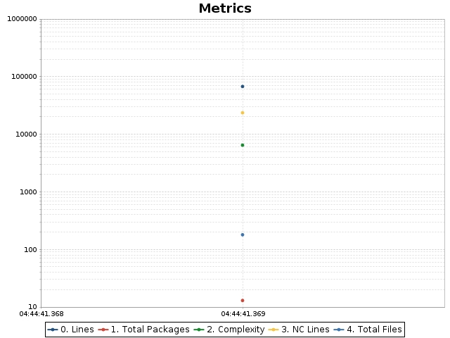
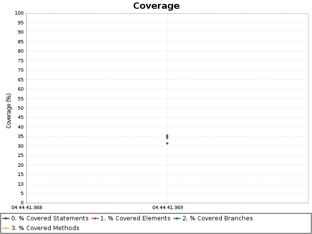

OpenClover
Linked reports
Lang
Help
Lang
Coverage overview
Added classes
Changed classes
Charts
Historical coverage report
Date range
From:
Sat Dec 31 2022 04:44:41 MST
To:
Sat Dec 31 2022 04:44:41 MST
Code metrics
Branches:
5,994
Statements:
11,528
Methods:
2,567
Classes:
269
Files:
180
Packages:
13
LOC:
67,517
NCLOC:
23,605
Total complexity:
6,473
Complexity density:
0.56
Statements/Method:
4.49
Methods/Class:
9.54
Classes/Package:
20.69
Average method complexity:
2.52
Branches:
5,994
Statements:
11,528
Methods:
2,567
Classes:
269
Files:
180
Packages:
13
LOC:
67,517
NCLOC:
23,605
Total complexity:
6,473
Complexity density:
0.56
Statements/Method:
4.49
Methods/Class:
9.54
Classes/Package:
20.69
Average method complexity:
2.52
Coverage overview
Conditionals
Statements
Methods
TOTAL
Project
31.3%
35.2%
35.9%
$sortValue
34.1%
Added classes
Changed classes
Charts

